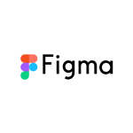
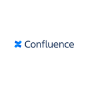

Wealth Investment Management · Wells Fargo
OneWIM: rebuilding the advisor experience from the ground up
A Salesforce-based rebrand of Advisor Gateway, grounded in direct advisor research, delivered as a board-ready, WCAG-compliant prototype in six weeks.
Understanding the pain points
WIM Leadership reached out to me to lead a solution when an external vendor's prototype fell short of what stakeholders needed, and the clock was already running. An upcoming Operating Committee review, tied directly to funding approval, meant we needed a fully interactive, end-to-end prototype ready in a matter of weeks, not months.
At the center of the problem was a genuinely outdated client experience: opening a new investment account, such as an IRA, still required a wet signature at every step of the application. That paperwork-heavy process lived inside a system built entirely in-house, not on Salesforce. Wells Fargo was moving toward a new Salesforce instance to replace the aging, internally-built tool, and the vendor's job had been to brand and skin that upcoming Salesforce environment, not to design the experience from scratch. When the vendor's work fell short, the real challenge became designing a genuinely on-brand, e-sign-enabled experience on that new Salesforce foundation, one built to finally retire the outdated in-house system for good.
The goal was to design a path from the advisor's application through to the client, in a strict e-sign environment, one that met compliance, WCAG accessibility, and Wells Fargo brand standards simultaneously, not as separate hurdles to clear after the fact. That gap wasn't just an inconvenience: it meant advisors couldn't close business remotely, and clients were held to a process that hadn't kept pace with how the rest of their financial lives worked.
Building the business case
The pain points behind OneWIM were already well documented by the time we took on this effort: an all-wet-sign, all-hardcopy process, a clunky, outdated interface that fell short of both brand and accessibility standards, and an advisor population dissatisfied enough with their tools that some were leaving Wells Fargo altogether over it. That documented reality was more than enough on its own to justify the work.
What I brought in addition was a firsthand, personal data point that reinforced what was already known rather than originated it. At the time, I happened to be in the process of moving my own investment accounts to Wells Fargo Advisors, which meant I could sit with my own advisor and go through the exact end-to-end process we were trying to fix, not as a designer observing from the outside, but as an actual client living it.
I watched just how much paper the process generated, how many wet signatures it required, and how long it actually took. During one of those sessions, opening a real IRA account, my advisor discovered the paperwork had the wrong date of birth for my son. That single error meant going back through the forms, correcting it, and reprinting everything for a fresh round of wet signatures, adding at least twenty minutes to a process that already felt inefficient, paper-heavy, and error-prone by design.
That firsthand experience became a compelling, human addition to a case that was already well-supported. It wasn't a hypothetical inefficiency pulled from a report; it was a real client, in a real branch, watching a correctable error cost twenty extra minutes and a stack of reprinted paper. Alongside the documented advisor dissatisfaction and attrition, I built the case for OneWIM as a unified, Salesforce-based rebrand around exactly that kind of moment: not just a visual refresh, but a consolidation of aging, disconnected, paper-dependent processes into a single, modern advisor experience. I framed the opportunity around what leadership cared about most: reduced onboarding and support time for new advisors, fewer workaround- and error-driven delays, and a platform built to scale as Wealth Investment Management continued to grow.
A core part of that solution was technical: by using our APIs to connect directly to the client database electronically, we were able to auto-populate and verify client data rather than rely on manual entry. That meant a huge reduction in user error and duplication of effort; advisors no longer had to manually retype Social Security numbers, dates of birth, or other sensitive information that had previously been transcribed by hand at every step.
That framing, grounded in real advisor and client evidence rather than assumption, was what secured executive buy-in for an aggressive six-week timeline from concept to board-ready prototype.
Content strategy & brand alignment
Advisor Gateway had drifted far enough from Wells Fargo's enterprise brand standards that it read as a separate, dated product rather than part of a cohesive suite of tools. Bringing OneWIM back in line with brand meant more than swapping colors and logos; it meant rebuilding component patterns, typography, and interaction states to match current standards, while making sure the result still felt purpose-built for the density and complexity advisors actually work in.
That rebuild went beyond the visual layer, and it's where content strategy did as much heavy lifting as visual design. Error states, system messaging, inline validation, and contextual help text were all rewritten and restyled as part of the same effort, not left as generic system defaults. Where the legacy experience threw vague, inconsistent error text at advisors, OneWIM's messaging was rebuilt with a deliberate content strategy: specific, actionable, and on-brand, telling an advisor exactly what went wrong and what to do next, in language consistent with how Wells Fargo actually communicates with its own people. Help text and tooltips followed that same content strategy, giving advisors contextual guidance in the moment rather than sending them hunting through a separate help center.
Confidentiality Notice: Visuals have been recreated using AI to protect confidential information while accurately representing my design work.
Generic Salesforce Lightning shell, no brand identity, no e-sign path, seven-step application headed toward a wet signature.
After · Wells Fargo Wealth ManagementOn-brand, WCAG-compliant, e-sign enabled, advisor sends in one click.
Wet-signature office visits replaced with a secure, brand-consistent e-sign notification.
Designing for accessibility (WCAG)
Accessibility wasn't treated as a compliance checkbox added at the end; it was built into the process from day one. Every component was evaluated against WCAG standards for contrast, keyboard navigation, and screen reader compatibility as it was designed, not retrofitted after visual design was "final."
This mattered especially given the platform's user base: advisors span a wide range of ages, abilities, and working environments, and an inaccessible tool would have simply reproduced the same exclusionary friction OneWIM was meant to eliminate.
Designing for accessibility up front also paid off downstream. During the six-week sprint itself, engineering wasn't building the product yet; their role was iterative feedback, confirming that what we were designing was something they could feasibly build once the project was funded. But because accessibility was baked into the prototype from day one rather than treated as a later checklist item, it was already solved by the time funding was approved. When the scrum teams stood up to build the real thing, accessibility wasn't a phase they had to circle back for; it had already been checked off, which meant it never became a drag on that later development timeline.
Process & collaboration
The six-week sprint moved fast by necessity, but not at the expense of rigor. I partnered closely with product, engineering, brand, accessibility, and compliance stakeholders throughout, running iterative prototype reviews rather than waiting for a single big reveal.
Early on, I set up a dedicated Confluence space for the project, a single spot where everyone could contribute artifacts as they were produced. It also gave advisors direct visibility into our progress, meeting notes, and a place to upload anything they thought we might need, without requiring them to learn Jira or Kanban boards they weren't used to working in. Rather than bogging down stakeholders who lived outside our day-to-day design and engineering tools, the Confluence space met them where they already were, which kept collaboration moving instead of becoming another barrier on an already tight timeline.
Rather than wait until the end to gather feedback, we started every-other-day check-ins beginning in week four, on Mondays, Wednesdays, and Fridays. Each session, we'd upload the latest version of the prototype to Confluence and open a dedicated space for feedback, giving stakeholders, our advisor pool, our accessibility team, and other peers a standing opportunity to check in on the end-to-end prototype's progress and weigh in directly. We kept that cadence running until three days before we wrapped the final, ready prototype, giving us just enough runway to incorporate that last round of feedback without jeopardizing the deadline.
Our advisor pool wasn't something we assembled ourselves; it was a group of 10 advisors selected from across the enterprise, already established before our team was brought onto the project. They functioned as subject matter experts throughout, giving us incremental, real-world feedback as the prototype evolved rather than waiting to weigh in only at the very end.

Figma
ConfluenceOutcome
Under my leadership, and alongside an incredibly stellar design team consisting of a content strategist, a product design prototyper, and accessibility SMEs, we delivered a board-ready, interactive, end-to-end prototype, fully compliant with brand and WCAG standards, built on the Salesforce Lightning foundation and in keeping with Wealth Investment Management's brand standards, complete with all content. Delivered in six weeks and grounded in real advisor research rather than assumption, it reflected roughly a 60% improvement in time spent on the process, and 80%+ improvement in user satisfaction and ease, over the legacy Advisor Gateway experience, measured against our 10-advisor test group's completion times and post-session feedback.
The goal behind that completeness was intentional: if funding and approval were secured, we needed a prototype ready to hand directly to the assigned scrum teams, with nothing left to figure out. We shipped the end-to-end prototype to the Operating Committee at the end of that six-week window, and the outcome met the bar and then some. The prototype was met with high approval, two scrum teams were stood up, each comprised of a product designer, a content strategist lead, and a product lead, and the product shipped nine months later.
After that same OC demo, we also solicited final feedback from our 10-advisor test group, sending a formal survey to log and document their responses in FigJam. The goal was to have tangible, documented completion data and satisfaction feedback ready and waiting, so that if the Operating Committee approved funding, we'd already have the evidence in hand to hand off to the scrum teams alongside the prototype itself.
Just as important as the prototype itself was what it proved: that this kind of work didn't need to default to a vendor engagement. By capturing the effort internally, we kept institutional knowledge and technical capability inside the team rather than watching it walk out the door with an outside contractor when the engagement ended. That shift delivered real fiscal and efficiency gains alongside the design outcome: no vendor contract to renew, no ramp-up time re-explaining the business to someone new, and a team that could carry what it learned directly into the next project.
Feedback from our advisor pool was overwhelmingly positive. Only two of the ten advisors we tested with had any notable changes to request, and we were able to incorporate that feedback into future iterations alongside the scrum teams during the planning phase, rather than treating it as a blocker to shipping.
Beyond the metrics, OneWIM demonstrated that speed and rigor aren't mutually exclusive: a tight timeline can still produce a platform advisors trust, both in how it looks and in how it works for everyone who relies on it.